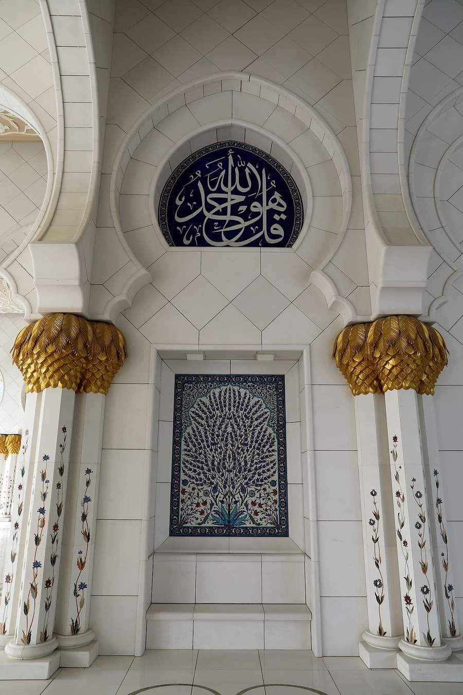
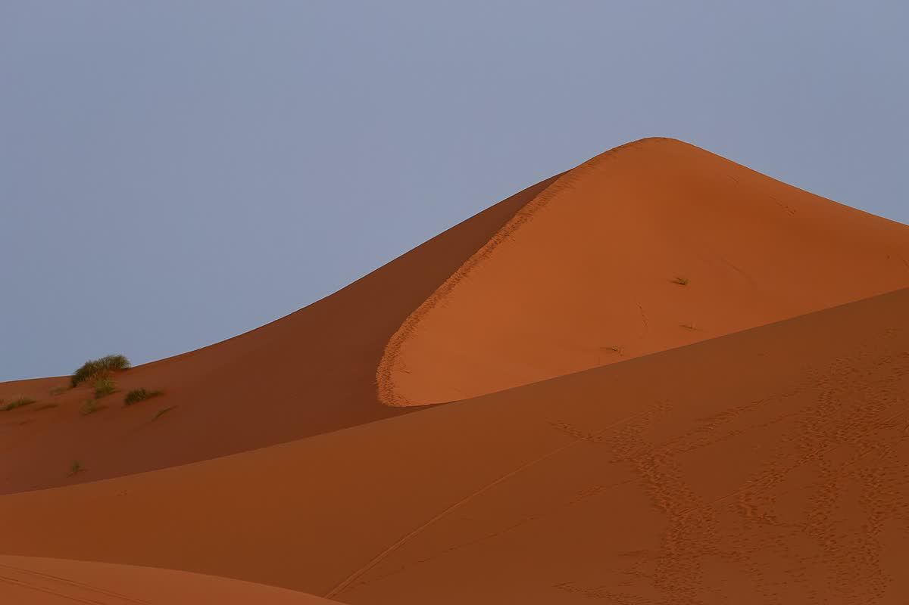
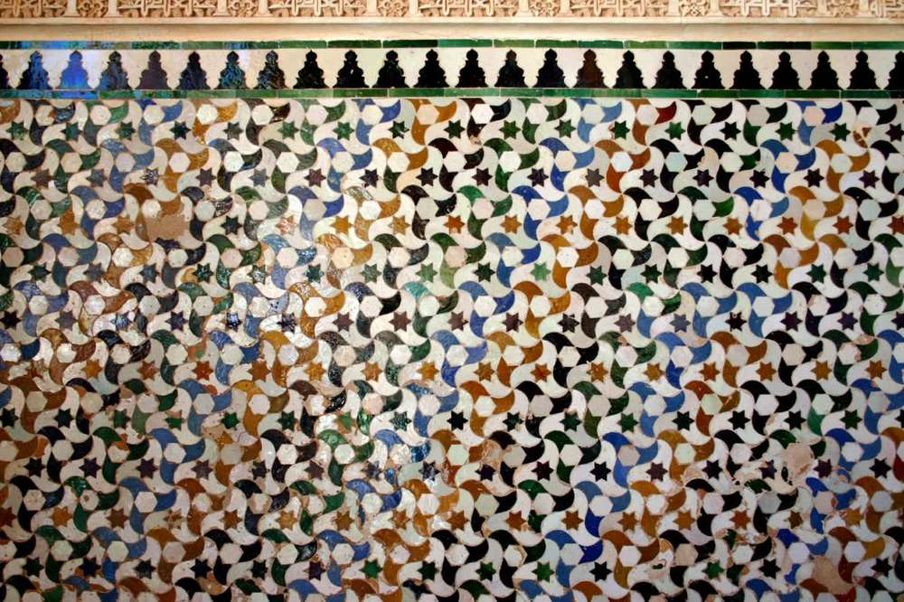

The Atheist
“His questions, as he asks them:”
Lead unit: 2 — The One Allah: Who Is Allah in Islam?Your way to the Light of Islam — with a companion for your first steps.
A calm, clear doorway to discovering Islam from its trusted sources, and human companionship for the new Muslim through the first thirty days. Start where you are, at your own pace — no account, no pressure.
Start Discovering Islam I am a new Muslim — show me the journey

Nine doorways for different backgrounds; each one leads you to the unit where your journey through the one same curriculum begins.
“His questions, as he asks them:”
Lead unit: 2 — The One Allah: Who Is Allah in Islam?“"Our path works: I am calmer and more compassionate than I was. Why do I need a god?"”
Lead unit: 3 — Why Did Allah Create Us? The Meaning of Life, Death, and Destiny“"In our ancient texts we already have it that God is One… so what is new with you?" (A bridge question, not a hostile one — it is to be celebrated.)”
Lead unit: 2 — The One Allah: Who Is Allah in Islam?“His questions, as he actually asks them:”
Lead unit: 4 — The Prophets and Messengers: One Chain and One Message“"We are the first monotheists; monotheism was with us two thousand years before Islam. So what do you add?"”
Lead unit: 4 — The Prophets and Messengers: One Chain and One Message“"We have known the Supreme Creator since our fathers; our intermediaries only bring us near to Him"”
Lead unit: 2 — The One Allah: Who Is Allah in Islam?“His questions, as he asks them:”
Lead unit: 3 — Why Did Allah Create Us? The Meaning of Life, Death, and Destiny“"My horoscope today said something that actually happened… coincidence?"”
Lead unit: 2 — The One Allah: Who Is Allah in Islam?“"Our religion is the oldest living monotheism; are we not the origin and you the branch?"”
Lead unit: 4 — The Prophets and Messengers: One Chain and One Message
Photo: Merzouga dunes, Morocco — Mustang Joe, CC0, via Wikimedia CommonsOne numbered path: from the question “What is Islam?” to the step “How do I become Muslim?”. Every unit is readable without an account and ends with an instant-feedback consolidation quiz and one single next step.
Five rungs you climb one by one: quizzes averaging at least 80% and performed practice tasks — and the rung lights up, with no certificates; the lit rung is the mark.
This site was not built to argue with you, but to walk beside you

A first conversation, anonymous, with no name and no account — and when you wish, that same conversation graduates to a named companion who walks with you.
The graduate's home inside the project: an internal space where new Muslims write about their new lives and challenges and meet the sheikhs and companions — it opens at launch for the people of the journey.